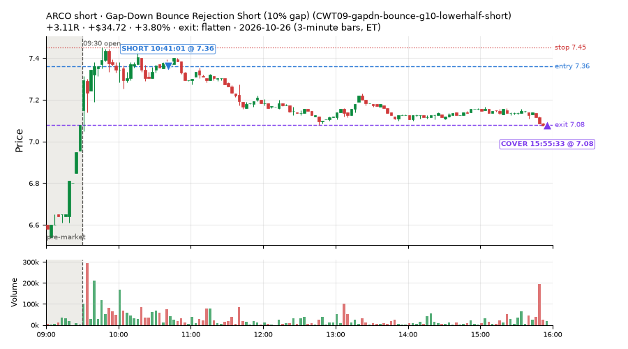
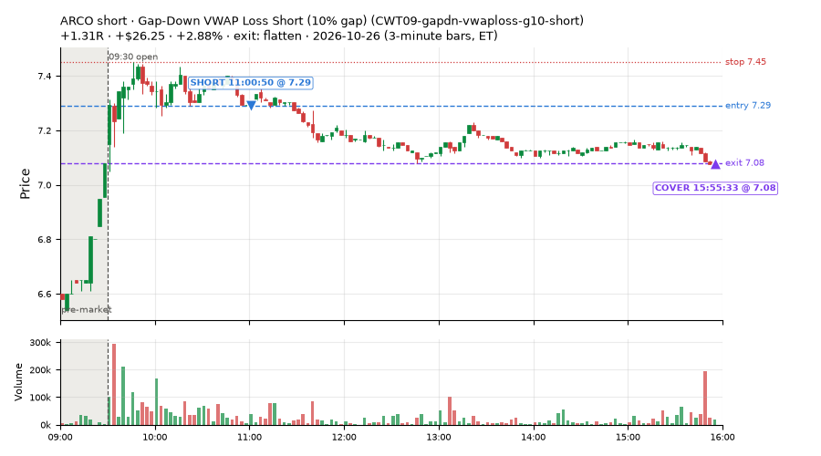
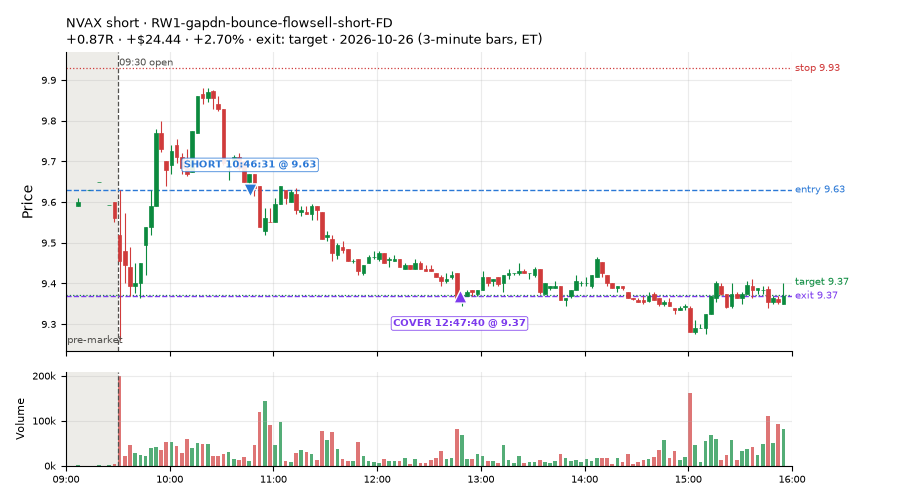
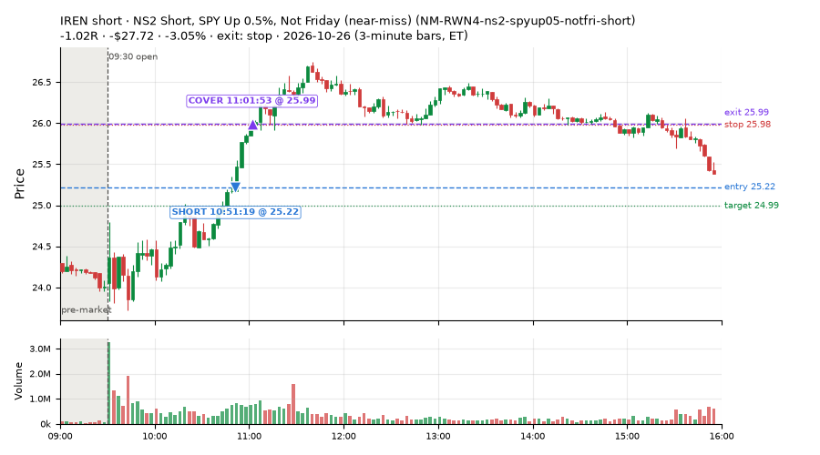
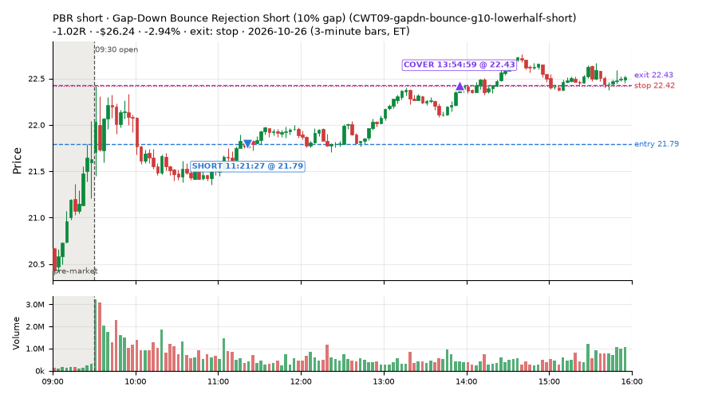
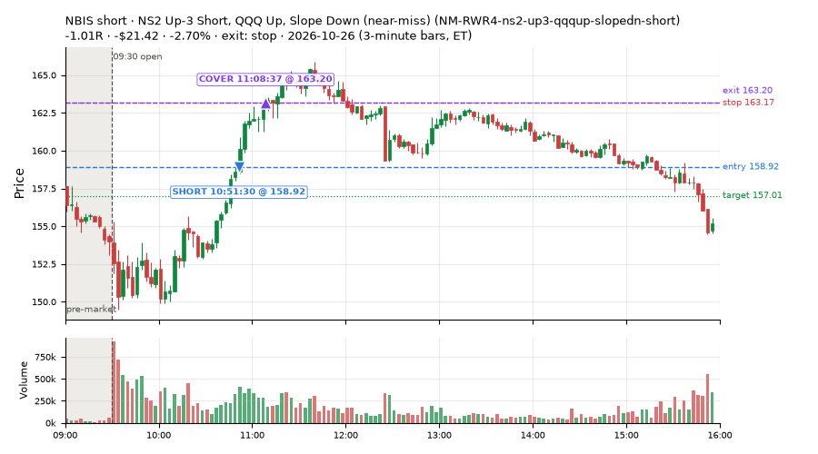

136 trades · win rate 49% · P/L $-12.47
PROBATION: no live setup has passed both locked test periods. 10 owner-directed setups added 2026-10-08 (MarcoFlow top 5 + 5 new), untested live. RW6G1 (RW6 + VWAP band guard) added 2026-10-09, probation.

| Symbol | Setup | Side | In | Out | Entry | Exit | Exit reason | % gained | P/L |
|---|---|---|---|---|---|---|---|---|---|
| ARCO | Gap-Down Bounce Rejection Short (10% gap) (CWT09-gapdn-bounce-g10-lowerhalf-short) | short | 10:41 | 15:55 | 7.36 | 7.08 | flatten | +3.80% | $34.72 |
| ARCO | Gap-Down VWAP Loss Short (10% gap) (CWT09-gapdn-vwaploss-g10-short) | short | 11:00 | 15:55 | 7.29 | 7.08 | flatten | +2.88% | $26.25 |
| NVAX | RW1-gapdn-bounce-flowsell-short-FD | short | 10:46 | 12:47 | 9.63 | 9.37 | target | +2.70% | $24.44 |
| Symbol | Setup | Side | In | Out | Entry | Exit | Exit reason | % lost | P/L |
|---|---|---|---|---|---|---|---|---|---|
| ITUB | CWT09-gapdn-bounce-g10-lowerhalf-short | short | 11:21 | 15:27 | 7.52 | 7.79 | stop | -3.59% | $-32.67 |
| IREN | NM-RWR4-ns2-up3-qqqup-slopedn-short | short | 10:51 | 11:01 | 25.22 | 25.99 | stop | -3.05% | $-27.72 |
| IREN | NM-RWN4-ns2-spyup05-notfri-short | short | 10:51 | 11:01 | 25.22 | 25.99 | stop | -3.05% | $-27.72 |
| PBR | CWT09-gapdn-bounce-g10-lowerhalf-short | short | 11:21 | 13:54 | 21.79 | 22.43 | stop | -2.94% | $-26.24 |
| NBIS | NM-RWR4-ns2-up3-qqqup-slopedn-short | short | 10:51 | 11:08 | 158.92 | 163.20 | stop | -2.70% | $-21.42 |






Signal to fill: median 1s, 90th percentile 3s (136 trades). Bars close each minute; the order follows the bar close.
Best excursion (MFE): median 0.32R; worst (MAE) median 0.72R. 43% of trades never got +0.25R in our favour; 1 reached +1R and still closed at or below 0.
| Symbol | Setup | Best R | Worst R | Closed R |
|---|---|---|---|---|
| PBR | exhaustion_short-FD | +1.01 | -1.10 | -0.99 |
| EWZ | CWT09-gapdn-bounce-g10-lowerhalf-short | +0.44 | -1.64 | -1.22 |
| PBR | CWT13-vwapstretch-z075-short | +0.46 | -1.15 | -1.01 |
| HBM | CWT12-coil-k4-long | +0.44 | -0.98 | -1.02 |
| CTVA | CWT14-failbrk-pdl-p05-lowvol-long | +0.44 | -1.01 | -1.01 |
| Entry time | Trades | Win | Avg R | P/L |
|---|---|---|---|---|
| 10:30-11:30 | 90 | 46% | -0.26 | $-62.71 |
| 11:30-13:00 | 29 | 59% | -0.01 | $41.31 |
| 13:00-14:00 | 14 | 57% | -0.03 | $6.33 |
| 14:00-16:00 | 3 | 33% | -0.52 | $2.60 |
| Setup | Trades | Win | Avg R | Adj R (net of SPY) | P/L |
|---|---|---|---|---|---|
| Panic Flush Reversal (deep, 3x volume) (CWT05-flush-m075-v3-long) | 1.0 | 100% | +0.61 | +0.51 | $5.40 |
| Gap-Down Bounce Rejection Short (10% gap) (CWT09-gapdn-bounce-g10-lowerhalf-short) | 7.0 | 14% | -0.29 | -0.35 | $-73.20 |
| Gap-Down VWAP Loss Short (10% gap) (CWT09-gapdn-vwaploss-g10-short) | 1.0 | 100% | +1.31 | +1.17 | $26.25 |
| Coil Under the High (4 bars) (CWT12-coil-k4-long) | 52.0 | 31% | -0.54 | -0.23 | $-110.52 |
| Stretched Above VWAP Fade (far) (CWT13-vwapstretch-z075-short) | 4.0 | 75% | +0.28 | +0.14 | $6.23 |
| Failed Prior-Day-Low Break Long (0.05 ATR, low volume) [fill] (CWT14-failbrk-pdl-p05-lowvol-long) | 16.0 | 31% | -0.44 | -0.27 | $-37.93 |
| Failed Prior-Day-Low Break Long (CWT14-failbrk-pdl-p10-long) | 11.0 | 55% | -0.07 | +0.01 | $19.59 |
| L3-gap-slope-rsi5hi-FD | 18.0 | 94% | +0.45 | +0.32 | $147.74 |
| MF5-flowsell-vwapup-rsi5hi-FD | 1.0 | 100% | +1.20 | +0.25 | $3.70 |
| NS2 Short, SPY Up 0.5%, Not Friday (near-miss) (NM-RWN4-ns2-spyup05-notfri-short) | 8.0 | 62% | -0.03 | -0.11 | $-10.93 |
| NS2 Up-3 Short, QQQ Up, Slope Down (near-miss) (NM-RWR4-ns2-up3-qqqup-slopedn-short) | 5.0 | 40% | -0.32 | -0.37 | $-34.36 |
| Gap-Down VWAP Loss Short, Slope Filter (near-miss) (NM1-cwt09-g10-vwaploss-short) | 2.0 | 50% | -0.33 | -0.34 | $-5.76 |
| Big Loser VWAP Reclaim Fade (all day) (NS3-failed-vwap-reclaim-short-FD) | 1.0 | 100% | +0.27 | +0.18 | $3.96 |
| NS5-sma50-flush-oversold-long-FD | 1.0 | 100% | +0.67 | +0.71 | $6.81 |
| RW1-gapdn-bounce-flowsell-short-FD | 3.0 | 67% | +0.16 | +0.01 | $23.60 |
| exhaustion_short-FD | 5.0 | 80% | +0.24 | +0.12 | $16.95 |
Market direction (SPY, beta 1) accounted for $-40.44 of today's $-12.47; the rest ($27.97) came from the setups themselves. Avg R net of SPY: -0.09 (incl. a hedge leg's cost; report only).
45 setups live today. Today: 167 signals, 136 taken, 3 lost because another setup held the symbol (2%). Since 2026-10-12 (11 sessions): 6610 signals, 3244 taken, 615 lost to other setups (9%). Peak open positions today 88 of 400 slots. Earnings blackout removed 1023 symbols before scanning.
Simulated playing time (not live): 3358 what-if trades of signals not taken, avg -0.11R, 58% winners; of them 615 lost to another setup (avg -0.17R).
Silent: LD4-st4-breadthup-t1s05-long, LD5-st2-breadthup-t05s1-long, LD8-spy-dip030-breadthturn-spxl-holdtr-long, LD3-st2-idxturn-t05s1-long, LD6-spy-dip020atr-breadthturn-spxl-holdtr-long, LD1-ns1-breadthup-t05s1-long, LD2-qqq-dip015-breadthturn-tqqq-t05s1-long, LD7-ns1-idxturn-holdtr-long, NM-RWR1-exh150-gapdn-spyup-pm-short, CWT04-backside-lh-a25-short, CWT04-backside-vwaptest-a25-short · Crowded out: MF5-flowsell-vwapup-rsi5hi · Starved: NS3-failed-vwap-reclaim-short-FD, NS5-sma50-flush-oversold-long-FD, MF5-flowsell-vwapup-rsi5hi-FD, RW4-ns3-adv150-short-FD, exhaustion_short-FD
| Prio | Setup | Today sig / taken | Sessions | Signals / taken / trades | Taken/day | Expected/day | Lost to other setups | Lost to (setup n) | Top skip reasons | SIMULATED: not-taken n / avg R / win | Verdict |
|---|---|---|---|---|---|---|---|---|---|---|---|
| 1 | Big Loser VWAP Reclaim Fade, Morning, Wide Stop NS3V1-am-widestop-short | 0 / 0 | 2 | 0 / 0 / 0 | 0.00 | 5.30 | 0 | – | – | 0 / – | watch no signals in 2 session(s), ~10.6 expected |
| 2 | Big Loser VWAP Reclaim Fade (all day) NS3-failed-vwap-reclaim-short-FD | 1 / 1 | 3 | 17 / 9 / 9 | 3.00 | 22.02 | 3 | NS3-failed-vwap-reclaim-short-FD 3, RW4-ns3-adv150-short-FD 3 | spread / quote / size 5, symbol held by another setup 3 | 8 / -0.69R / 12% | starved 3.00 entries/day vs ~22.02 expected |
| 3 | * Oversold EMA Cross-Down with Breadth Turning Up (near-miss) LD4-st4-breadthup-t1s05-long | 0 / 0 | 4 | 0 / 0 / 0 | 0.00 | – | 0 | – | – | 0 / – | silent no signals in 4 session(s); no expected rate on file |
| 4 | * Oversold Slope Turn with Breadth Turning Up (near-miss) LD5-st2-breadthup-t05s1-long | 0 / 0 | 4 | 0 / 0 / 0 | 0.00 | – | 0 | – | – | 0 / – | silent no signals in 4 session(s); no expected rate on file |
| 5 | * SPY Dip of 0.30%, Breadth Turn (SPXL, trailing) (near-miss) LD8-spy-dip030-breadthturn-spxl-holdtr-long | 0 / 0 | 4 | 0 / 0 / 0 | 0.00 | – | 0 | – | – | 0 / – | silent no signals in 4 session(s); no expected rate on file |
| 6 | * Oversold Slope Turn after an SPY Dip-Turn (near-miss) LD3-st2-idxturn-t05s1-long | 0 / 0 | 4 | 0 / 0 / 0 | 0.00 | – | 0 | – | – | 0 / – | silent no signals in 4 session(s); no expected rate on file |
| 7 | * SPY Dip of 0.2 ATR, Breadth Turn (SPXL, trailing) (near-miss) LD6-spy-dip020atr-breadthturn-spxl-holdtr-long | 0 / 0 | 4 | 0 / 0 / 0 | 0.00 | – | 0 | – | – | 0 / – | silent no signals in 4 session(s); no expected rate on file |
| 8 | * Oversold Pop with Breadth Turning Up (near-miss) LD1-ns1-breadthup-t05s1-long | 0 / 0 | 4 | 0 / 0 / 0 | 0.00 | – | 0 | – | – | 0 / – | silent no signals in 4 session(s); no expected rate on file |
| 9 | * Shallow Nasdaq Dip, Breadth Turn (TQQQ) (near-miss) LD2-qqq-dip015-breadthturn-tqqq-t05s1-long | 0 / 0 | 4 | 0 / 0 / 0 | 0.00 | – | 0 | – | – | 0 / – | silent no signals in 4 session(s); no expected rate on file |
| 10 | * Oversold Pop after an SPY Dip-Turn (trailing) (near-miss) LD7-ns1-idxturn-holdtr-long | 0 / 0 | 4 | 0 / 0 / 0 | 0.00 | – | 0 | – | – | 0 / – | silent no signals in 4 session(s); no expected rate on file |
| 11 | Monday Weak-RS NS3 Short (near-miss) NM-RWN5-ns3-mon-weakrs-short | 0 / 0 | 6 | 6 / 5 / 5 | 0.83 | – | 0 | – | spread / quote / size 1 | 1 / -1.02R / 0% | slow 4.2 entries/week; ~14 weeks to 60 trades |
| 12 | Early NS3 Short While QQQ Up (near-miss) NM-RWR3-ns3-qqqup-early-short | 0 / 0 | 6 | 3 / 2 / 2 | 0.33 | – | 0 | – | spread / quote / size 1 | 1 / -1.02R / 0% | slow 1.7 entries/week; ~36 weeks to 60 trades |
| 13 | Early NS3 Short While SPY Up (near-miss) NM-RWN3-ns3-spyup-early-short | 0 / 0 | 6 | 3 / 2 / 2 | 0.33 | – | 0 | – | spread / quote / size 1 | 1 / -1.02R / 0% | slow 1.7 entries/week; ~36 weeks to 60 trades |
| 14 | Late-Day ETF Dip Buy (near-miss) NM-ETF-late-dip-di-long | 0 / 0 | 6 | 5 / 5 / 5 | 0.83 | – | 0 | – | – | 0 / – | slow 4.2 entries/week; ~14 weeks to 60 trades |
| 15 | NS2 Up-3 Short, QQQ Up, Slope Down (near-miss) NM-RWR4-ns2-up3-qqqup-slopedn-short | 6 / 5 | 6 | 6 / 5 / 5 | 0.83 | – | 0 | – | not shortable / shorts off 1 | 1 / -1.04R / 0% | slow 4.2 entries/week; ~14 weeks to 60 trades |
| 16 | Afternoon Exhaustion Short, Gap-Down, SPY Up (near-miss) NM-RWR1-exh150-gapdn-spyup-pm-short | 0 / 0 | 6 | 0 / 0 / 0 | 0.00 | – | 0 | – | – | 0 / – | silent no signals in 6 session(s); no expected rate on file |
| 17 | NS2 Short, SPY Up 0.5%, Not Friday (near-miss) NM-RWN4-ns2-spyup05-notfri-short | 9 / 8 | 6 | 9 / 8 / 8 | 1.33 | – | 0 | – | not shortable / shorts off 1 | 1 / -1.04R / 0% | slow 6.7 entries/week; ~9 weeks to 60 trades |
| 18 | Gap-Down Capitulation Buy (near-miss) NM-AR-AM-gapdown-capitulation-long | 0 / 0 | 6 | 29 / 25 / 25 | 4.17 | – | 0 | – | spread / quote / size 4 | 4 / -0.54R / 25% | ok 20.8 entries/week |
| 19 | Quiet Downtrend Bounce Short (near-miss) NM-AMS-N1-quiet-morning-short | 0 / 0 | 6 | 1 / 0 / 0 | 0.00 | – | 1 | NM-AR-AM-gapdown-capitulation-long 1 | symbol held by another setup 1 | 1 / +0.51R / 100% | slow no entries yet |
| 20 | Gap-Down Reclaim Fade, Afternoon (near-miss) NM-PM-gapdn-above-pdh-rvol-short | 0 / 0 | 6 | 1 / 1 / 1 | 0.17 | – | 0 | – | – | 0 / – | slow 0.8 entries/week; ~72 weeks to 60 trades |
| 21 | Gap-Down VWAP Loss Short, Slope Filter (near-miss) NM1-cwt09-g10-vwaploss-short | 4 / 2 | 6 | 13 / 2 / 2 | 0.33 | – | 0 | – | not shortable / shorts off 9, spread / quote / size 2 | 11 / -0.29R / 36% | slow 1.7 entries/week; ~36 weeks to 60 trades |
| 22 | Afternoon Higher-Low Long (near-miss) NM-HL-T75-pm-long | 1 / 0 | 6 | 9 / 8 / 8 | 1.33 | – | 0 | – | spread / quote / size 1 | 1 / +0.49R / 100% | slow 6.7 entries/week; ~9 weeks to 60 trades |
| 23 | Backside Lower-High Short (big runner) CWT04-backside-lh-a25-short | 0 / 0 | 11 | 0 / 0 / 0 | 0.00 | – | 0 | – | – | 0 / – | silent no signals in 11 session(s); no expected rate on file |
| 24 | Backside VWAP-Test Short (big runner) CWT04-backside-vwaptest-a25-short | 0 / 0 | 11 | 0 / 0 / 0 | 0.00 | – | 0 | – | – | 0 / – | silent no signals in 11 session(s); no expected rate on file |
| 25 | Gap-Down VWAP Loss Short (10% gap) CWT09-gapdn-vwaploss-g10-short | 1 / 1 | 11 | 36 / 4 / 4 | 0.36 | – | 0 | – | not shortable / shorts off 30, daily loss cap 1, spread / quote / size 1 | 32 / -0.22R / 44% | slow 1.8 entries/week; ~33 weeks to 60 trades |
| 26 | Panic Flush Reversal (deep, 5x volume) CWT05-flush-m075-v5-long | 0 / 0 | 11 | 5 / 3 / 3 | 0.27 | – | 0 | – | daily loss cap 2 | 2 / +0.52R / 100% | slow 1.4 entries/week; ~44 weeks to 60 trades |
| 27 | NS5-sma50-flush-oversold-long-FD NS5-sma50-flush-oversold-long-FD | 1 / 1 | 4 | 4 / 4 / 4 | 1.00 | 6.32 | 0 | – | – | 0 / – | starved 1.00 entries/day vs ~6.32 expected |
| 28 | Gap-Down Bounce Rejection Short (10% gap) CWT09-gapdn-bounce-g10-lowerhalf-short | 10 / 7 | 11 | 63 / 11 / 11 | 1.00 | – | 0 | – | not shortable / shorts off 48, spread / quote / size 3, broker rejected 1 | 52 / -0.73R / 15% | slow 5.0 entries/week; ~12 weeks to 60 trades |
| 29 | Backside Lower-High Short CWT04-backside-lh-a15-short | 0 / 0 | 11 | 3 / 1 / 1 | 0.09 | – | 0 | – | daily loss cap 1, spread / quote / size 1 | 2 / -0.05R / 50% | slow 0.5 entries/week; ~132 weeks to 60 trades |
| 30 | Panic Flush Reversal (5x volume) CWT05-flush-m05-v5-long | 0 / 0 | 11 | 8 / 4 / 4 | 0.36 | – | 1 | CWT14-failbrk-orl-p10-long 1 | daily loss cap 2, symbol held by another setup 1, spread / quote / size 1 | 4 / +0.58R / 100% | slow 1.8 entries/week; ~33 weeks to 60 trades |
| 31 | Panic Flush Reversal (deep, 3x volume) CWT05-flush-m075-v3-long | 1 / 1 | 11 | 14 / 10 / 10 | 0.91 | – | 0 | – | daily loss cap 3, broker rejected 1 | 4 / +0.46R / 100% | slow 4.5 entries/week; ~13 weeks to 60 trades |
| 32 | Spike-Pullback Flag Breakout CWT12-flag-s1-long | 0 / 0 | 11 | 16 / 12 / 12 | 1.09 | – | 0 | – | daily loss cap 2, spread / quote / size 1, broker rejected 1 | 4 / -0.16R / 75% | slow 5.5 entries/week; ~11 weeks to 60 trades |
| 33 | Backside VWAP-Test Short CWT04-backside-vwaptest-a15-short | 0 / 0 | 11 | 10 / 6 / 6 | 0.55 | – | 1 | CWT14-failbrk-pdl-p05-lowvol-long 1 | symbol held by another setup 1, daily loss cap 1, not shortable / shorts off 1 | 4 / +1.27R / 75% | slow 2.7 entries/week; ~22 weeks to 60 trades |
| 34 | Early Sellers into a Pop (index down, no gap up) (near-miss) NM-MF3-qqqdn-gapdn-FD | 0 / 0 | 4 | 27 / 18 / 18 | 4.50 | 4.90 | 3 | NM-AR-AM-gapdown-capitulation-long 3 | symbol held by another setup 3, not shortable / shorts off 3, spread / quote / size 3 | 9 / +0.34R / 67% | ok 22.5 entries/week |
| 35 | Stretched Above VWAP Fade (far) CWT13-vwapstretch-z075-short | 4 / 4 | 11 | 27 / 14 / 14 | 1.27 | – | 0 | – | not shortable / shorts off 8, daily loss cap 4, spread / quote / size 1 | 13 / -0.58R / 23% | slow 6.4 entries/week; ~9 weeks to 60 trades |
| 36 | RW1-gapdn-bounce-flowsell-short-FD RW1-gapdn-bounce-flowsell-short-FD | 3 / 3 | 4 | 43 / 25 / 25 | 6.25 | 17.10 | 2 | NM-AR-AM-gapdown-capitulation-long 1, NM-HL-T75-pm-long 1 | daily loss cap 10, spread / quote / size 5, symbol held by another setup 2 | 18 / +0.66R / 83% | ok 31.2 entries/week |
| 37 | MF5-flowsell-vwapup-rsi5hi-FD MF5-flowsell-vwapup-rsi5hi-FD | 1 / 1 | 4 | 12 / 10 / 10 | 2.50 | 15.47 | 0 | – | not shortable / shorts off 1, spread / quote / size 1 | 2 / +0.54R / 50% | starved 2.50 entries/day vs ~15.47 expected |
| 38 | RW4-ns3-adv150-short-FD RW4-ns3-adv150-short-FD | 0 / 0 | 4 | 19 / 15 / 15 | 3.75 | 17.34 | 4 | NS3-failed-vwap-reclaim-short-FD 4, RW4-ns3-adv150-short-FD 4 | symbol held by another setup 4 | 4 / -0.90R / 0% | starved 3.75 entries/day vs ~17.34 expected |
| 39 | Sellers into Strength (all day) MF5-flowsell-vwapup-rsi5hi | 0 / 0 | 4 | 3 / 0 / 0 | 0.00 | 15.47 | 3 | MF5-flowsell-vwapup-rsi5hi-FD 3 | symbol held by another setup 3 | 3 / +0.59R / 67% | crowded-out 3 of 3 signals (100%) lost to setups already holding the symbol |
| 40 | exhaustion_short-FD exhaustion_short-FD | 6 / 5 | 4 | 29 / 24 / 24 | 6.00 | 64.64 | 1 | CWT12-coil-k4-long 1 | not shortable / shorts off 3, symbol held by another setup 1, spread / quote / size 1 | 5 / +0.40R / 80% | starved 6.00 entries/day vs ~64.64 expected |
| 41 | Stretched Below VWAP Bounce (far) CWT13-vwapstretch-z075-long | 0 / 0 | 11 | 39 / 8 / 8 | 0.73 | – | 0 | – | daily loss cap 28, spread / quote / size 3 | 31 / -0.40R / 39% | slow 3.6 entries/week; ~16 weeks to 60 trades |
| 42 | L3-gap-slope-rsi5hi-FD L3-gap-slope-rsi5hi-FD | 33 / 18 | 4 | 65 / 25 / 25 | 6.25 | – | 0 | – | not shortable / shorts off 37, spread / quote / size 3 | 40 / +0.04R / 75% | ok 31.2 entries/week |
| 43 | Failed Prior-Day-Low Break Long CWT14-failbrk-pdl-p10-long | 12 / 11 | 11 | 408 / 263 / 263 | 23.91 | – | 21 | CWT14-failbrk-pdl-p10-lowvol-long 15, CWT14-failbrk-pdl-p05-lowvol-long 4, CWT14-failbrk-pdl-p05-long 2 | spread / quote / size 72, daily loss cap 31, symbol held by another setup 21 | 144 / -0.02R / 67% | ok 119.5 entries/week |
| 44 | Failed Prior-Day-Low Break Long (0.05 ATR, low volume) [fill] CWT14-failbrk-pdl-p05-lowvol-long | 21 / 16 | 11 | 448 / 276 / 276 | 25.09 | – | 28 | CWT14-failbrk-pdl-p10-lowvol-long 17, CWT14-failbrk-pdl-p10-long 13, CWT14-failbrk-pdl-p05-long 7 | spread / quote / size 80, daily loss cap 57, symbol held by another setup 28 | 170 / -0.06R / 65% | ok 125.5 entries/week |
| 45 | Coil Under the High (4 bars) CWT12-coil-k4-long | 53 / 52 | 11 | 380 / 276 / 276 | 25.09 | – | 5 | CWT14-failbrk-pdl-p05-lowvol-long 1, CWT14-failbrk-pdl-p10-lowvol-long 1, CWT14-failbrk-pdh-p05-lowvol-short 1 | per-setup cap 41, spread / quote / size 38, daily loss cap 19 | 104 / -0.07R / 62% | ok 125.5 entries/week |
Every trade is attached as a CSV you can open and edit in Excel or Google Sheets. Live page: https://misiti15.github.io/MCF/live/